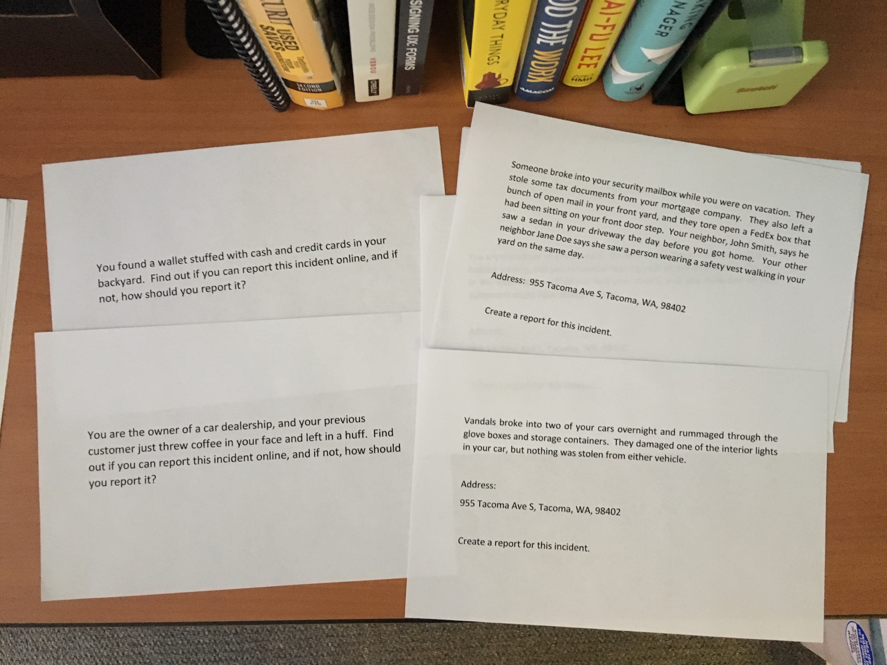

Creative software developer.
Scenario: Online Reporting is a South Sound 911 website which enables Pierce County residents to submit a police report for a non-emergency situation. Prior to its release date, management expressed interest in gathering some initial feedback about the application. I volunteered to conduct usability testing.
Goals: Identify common UX challenges users might encounter and observe user reactions.
Process: Following Steve Krug's recommendation in his book Don't Make Me Think, I created a test script for myself and several test scenarios (user stories). For my sample of users, I asked three family members of different demographics and technical abilities to participate, since the application is geared towards people of all backgrounds. I also invited a civilian volunteer from a local police department.
I met with each participant individually and in person. The test format consisted of first asking each person to "think out loud" their impression of the Online Reporting website, then asking them to fill out a report for 3-4 test scenarios. As they navigated the application, I asked only open-ended questions and avoided biasing the results by making suggestions or giving "hints," unless they got completely stuck.
Outcome: Across the three tests, there were 2–3 usability issues that were clearly prevalent, ranging from a button's label to the flow of the opening screens. User opinions on the site architecture were mixed and seemed to correlate with the experience. I collated the findings and presented them to the project manager. While the work to fix the UX issues did not gain enough relative priority to be addressed at the time, they remain documented in our Ideas list for future consideration.